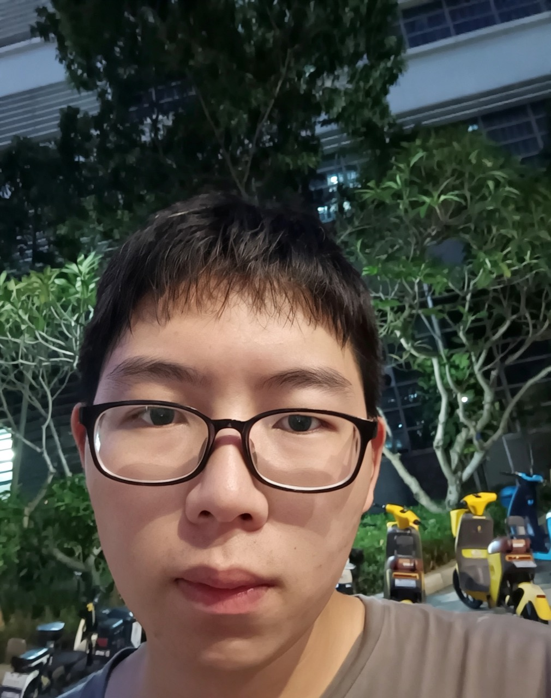
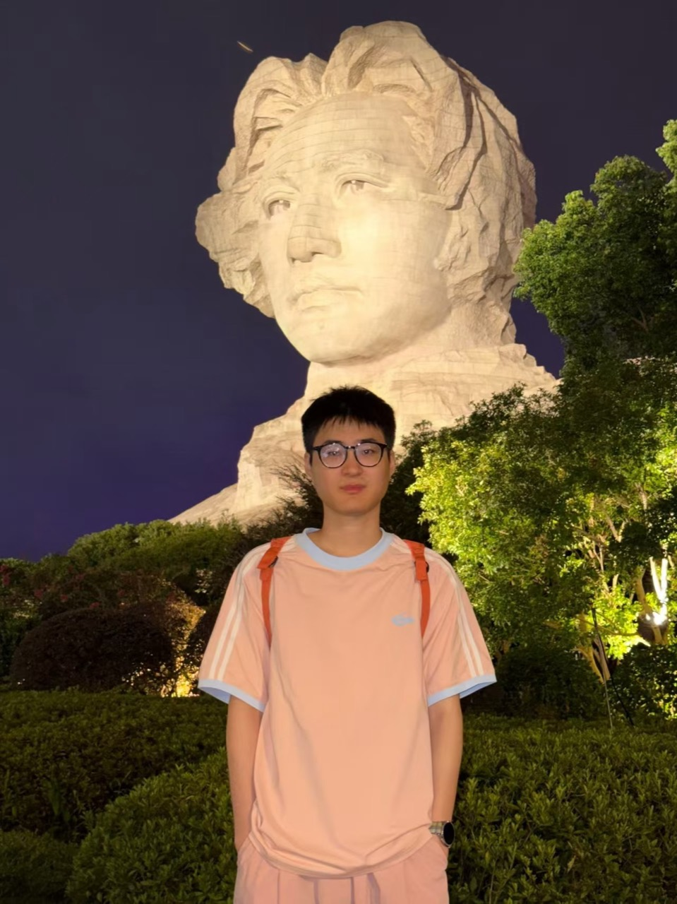
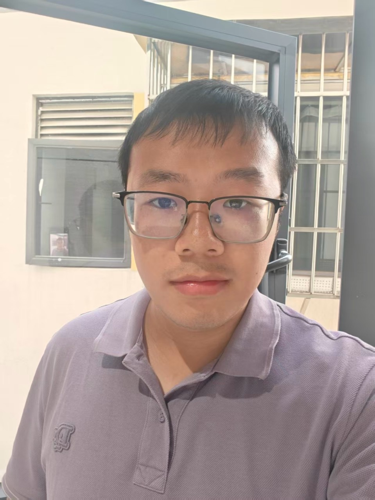
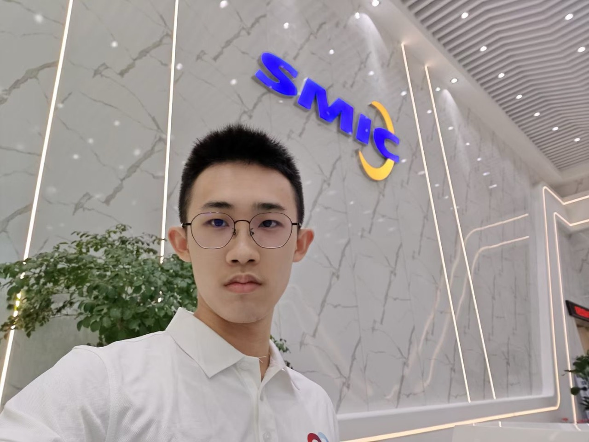

Group
Current Members
2024 Cohort
 |
Master Student (2024-current) B.S. Harbin Institute of Technology Shenzhen Research Interests: Federated Recommendation Systems |
 |
Master Student (2024-current) B.S. Harbin Institute of Technology Shenzhen Research Interests: Image Inpainting |
 |
Master Student (2024-current) B.S. Harbin Institute of Technology Shenzhen Research Intersts: Recommendation System |
 |
Master Student (2024-current) B.S. Harbin Institute of Technology Shenzhen Research Intersts: Numerical Optimization |
2025 Cohort
|
 |
Tongyu Zhou 周通宇 Master Student (2025-current) B.S. Harbin Institute of Technology Shenzhen Research Interests: Matrix Recovery; Diffusion Models |
|
 |
Jialong Lv 吕佳龙 Master Student (2025-current) B.S. Southwest Jiaotong University Research Interests: 3D Reconstruction |
Wang Li 李旺 Master Student (2025-current) B.S. Zhengzhou University Research Interests: Perception and Decision-Making |
Longyu Bai 白龙钰 Master Student (2025-current) B.S. Harbin Institute of Technology Research Interests: Neural Network Model Optimization |
2026 Cohort
|
 |
Xin Zhang 张昕 Master Student (2026-current) B.S. Harbin Institute of Technology Shenzhen Research Interests: Image Generation |
|
 |
Baiyu Gong 龚柏瑜 Master Student (2026-current) B.S. Harbin Institute of Technology Shenzhen Research Interests: Model Fine-Tuning |
Alumni
 |
Master Student (2023 intake) B.S. Harbin Institute of Technology Weihai Research Interests: Matrix Recovery |
 |
Master Student (2023 intake) B.S. Hefei University of Technology Research Interests: Wireless Positioning |